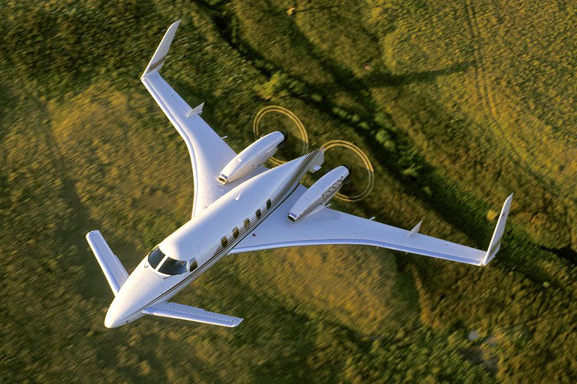

El Beechcraft Starship: Un Cometa del Cielo

Un Diseño Innovador
El Beechcraft Starship fue un avión ejecutivo de altas prestaciones que cautivó a la industria aeronáutica por su diseño radical y vanguardista. Con su fuselaje en forma de lágrima y alas en flecha, se asemejaba más a una nave espacial que a un avión convencional. Esta configuración aerodinámica le proporcionaba una velocidad crucero excepcional y una eficiencia de combustible sin precedentes en su época.
Tecnología de Punta
El Starship incorporó una serie de tecnologías avanzadas que lo situaron a la vanguardia de la aviación ejecutiva. Entre ellas destacaban:
- Materiales compuestos: Su estructura estaba fabricada en gran medida con materiales compuestos, lo que le confería una gran rigidez y ligereza.
- Aviónica de última generación: El Starship contaba con una suite de aviónica muy avanzada para su época, que facilitaba la navegación y el pilotaje.
- Motores turbofan: Estaba propulsado por dos poderosos motores turbofan que le permitían alcanzar una velocidad máxima superior a Mach 0.85.